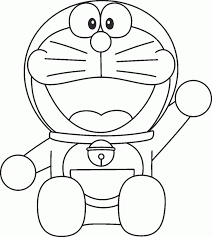

LAPORAN UNTUK KAMU JANGAN MAIN MAIN UNTUK SELINGKUH
jika kmu main main akan aku bunuh
testing 1
coretlah teks yang tidak dibutuhkanterpakai,ini
bisa memberitahu
membaca tentang perbaikan dari teks tersebut. kadang juga
teks tercoret
yang tercoret, diperbaiki dengan menambahkan teks
dengan garis bawah.
rumus persegi adalah s2, dimana s/ adalah sisi dari persegi. lalu o2 adalah rumus kimia dari oksigen.
kita menggunakn tabilo untuk menulis.
printah j5 untuk menampilkan teks ke console adalah
console.log(). kita juga bisa menmpilkan
isi variabel dengan fungsi ini.misalkan kita punya variabel
name, maka kode programnya bisa ditulis seperti ini.
var nama =" petani kode";
console.log(name)
maka hasil outputnya petani kode
untuk menjalankan ulang program, lakukan program dengan menekan tpmbol f5
penggabngan format teks bisa dilakukan dengan menuliskan teg-teg yang akan di pakai. misalkan penggabunagan tabel dan garis bawah, maka kita tinggal menggunakan teg b dan tag u

Atribut width dan height. atribut ini menentukan untuk lebar dan tiggi gambar
atribut style untuk menambahkan style css pada sebuah elemen. atribut ini sering digunakan pada gambar untuk memberikan efek luarbiasa